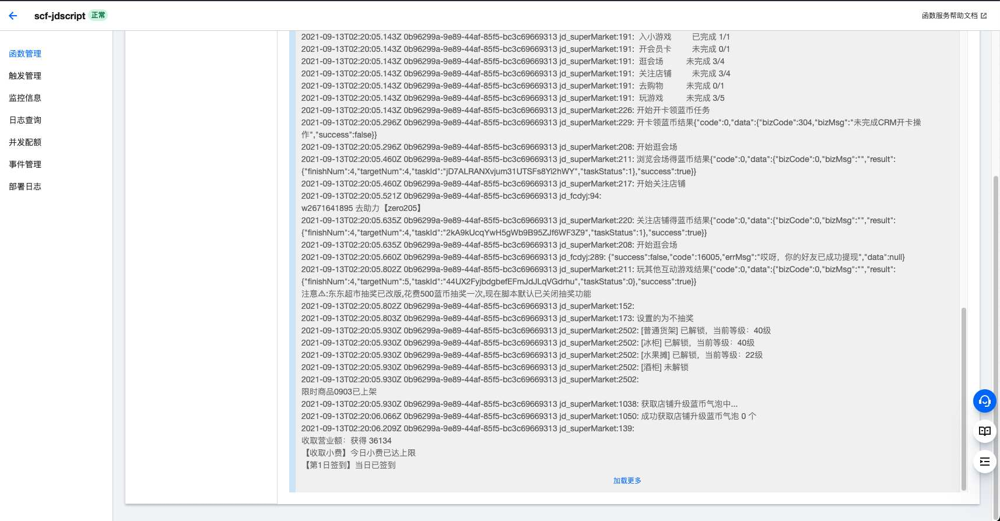

京东签到白嫖豆豆
- 作者:
- 淡白
- 创建时间：
- 2021-09-13 10:32:43
- 脚本 京东
摘要：这是一个签到脚本的介绍。该脚本可以通过部署到腾讯云函数来实现签到，无需服务器。但不能保证一直可用，目前可以使用。你可以通过这个开源的js脚本[Github](https://github.com/zero205/JD_tencent_scf/tree/main)来实现签到。还有一个相关的教程地址可以参考[教程地址](https://66ccff.work/teach/jd.html)，提供了更详细的指导。该脚本的作者是杏铃の小本。
签到脚本
 使用这个开源的js脚本 Github 通过部署到腾讯云函数来实现签到，无需服务器。不保证一直可以用，至少现在可以用。